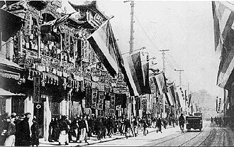
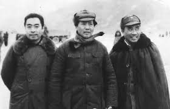

Part III · Revolutions · Chapter 7
Inherits: 1917 and Versailles (chs. 5–6) · Feeds: India 1930–47 (ch. 8), Korea (ch. 15)
China, 1911–1949
On the night of 10 October 1911, in Wuchang on the Yangtze, soldiers of an engineering battalion of the New Army turn their rifles on their own officers. Within three months, province after province has declared against the Qing, a republic has been proclaimed at Nanjing with Sun Yat-sen as its provisional president, and the dynasty that had ruled since 1644 is finished. What the collapse opened was not a sequence of events but a contest, and it ran for thirty-eight years: who could found the republic, who could speak for it, and who had the right to call themselves China. Chiang Kai-shek’s Republic of China answered from Nanjing; Mao Zedong’s People’s Republic answered from Beijing in 1949; both went on answering afterwards, from opposite sides of a strait.

Chapter 5 left the Chinese volume timing an idea rather than narrating an event: Marxism, it says, began to spread widely in China “after the October Revolution.” Chapter 6 left the same volume in Paris, where “power triumphed over justice” and the students went into the street on 4 May 1919. This chapter follows that imported vocabulary into the party founded in 1921, and out the far end — into the sentence that names the war the party won. Names are what the contest produced. One of them, the name of a retreat that began in 1934, is now painted on the rockets that put China into orbit, and it is where this chapter ends.
What do you call the war you won?
1 The boring facts
- 10 October 1911: mutiny at Wuchang. On 1 January 1912 a republic is proclaimed at Nanjing with Sun Yat-sen as provisional president; on 12 February the last emperor abdicates and the presidency passes to Yuan Shikai.
- Yuan dies in 1916. For the next twelve years no government in Beijing controls more than a fraction of the country; regional commanders do. 4 May 1919: students demonstrate in Beijing against the Shandong clauses of the Paris settlement. The Chinese Communist Party is founded in 1921; from 1924 it works inside Sun’s Nationalist Party.
- 1926–28: the Northern Expedition. On 12 April 1927 Nationalist forces and allied groups in Shanghai turn on the Communists and the labour unions; a nationwide purge follows. A Nationalist government is established at Nanjing.
- 1930–34: five encirclement campaigns against the Communist base areas in the south. In October 1934 the main Communist force leaves Jiangxi. In January 1935 a Party conference at Zunyi changes the leadership. The main columns reach northern Shaanxi in October 1935; three Red Army forces join at Huining in October 1936.
- December 1936: Chiang Kai-shek is seized at Xi’an by his own commanders and released on terms. 7 July 1937: full-scale war with Japan begins at the Marco Polo Bridge; it runs until Japan’s surrender in the summer of 1945. Historians commonly put Chinese deaths in that war in the range of fifteen to twenty million.
- August–October 1945: Mao Zedong and Chiang Kai-shek negotiate at Chongqing. The Double Tenth Agreement is signed on 10 October 1945. General fighting resumes in 1946.
- Autumn 1948 to January 1949: three large campaigns destroy the Nationalist armies in the north. Beiping falls in January 1949, Nanjing in April. The People’s Republic is proclaimed in Beijing on 1 October 1949, while fighting continues in the south and the west; the Republic of China moves its capital to Taipei on 7 December and holds China’s seat at the United Nations until 1971.
2 One month, two names
Start with the shortest sentence any of these books spends on the war. It is a line in the chronological table at the back of the Chinese volume, seventeen characters with a comma in the middle: 国民党发动全面内战，人民解放战争开始 — “the Nationalist Party launched an all-out civil war; the People’s War of Liberation began.” One month, June 1946. One war. Two names. Which name a reader gets depends entirely on which army is the subject of the clause. On the Nationalist side of the comma there is an agent, a transitive verb and the word 内战, civil war. On the Communist side there is no agent at all, an intransitive verb, and the word 解放, liberation. The book’s Unit 8 opening does it again at greater length and adds the motive: the Nationalists launched the civil war “in order to maintain its dictatorial rule,” and the Party “led the People’s War of Liberation.”
Seven other classrooms narrate the same years and none of them needs two names for anything. They agree, in five languages, about what the fighting was — a civil war, guerre civili, гражданская война, громадянська війна, “Civil Wars in China.” What they disagree about is who is doing it, and where in the book the ending is allowed to happen. Ordered by that, from the classroom where nobody starts the war and nobody founds the republic out to the comma:
| Classroom | Who starts it · how it ends | One-line tag |
|---|---|---|
| BY · Кошелев 2021 |
Who starts it «Но раскол между коммунистами и Гоминьданом привел к длительной и жестокой гражданской войне.» “But the split between the communists and the Kuomintang led to a long and brutal civil war.” |
A split starts it; a republic forms itself |
| IT · Sabbatucci–Vidotto 2004 |
Who starts it «Cominciava per la Cina una lunga stagione di guerre civili che si sarebbe conclusa solo nel 1949 con la vittoria della rivoluzione comunista.» “There began for China a long season of civil wars that would conclude only in 1949 with the victory of the communist revolution.” |
A long season of civil wars, ending in a revolution |
| US · OpenStax 2022 |
Who starts it “The situation in China was quite fluid through the 1920s and 1930s. Revolutionary activity grew but splintered, and the opposing views of Communists and Nationalists led to civil war.” |
A civil war, won by a Liberation Army |
| CN · 纲要 上 2019 |
Who starts it · one line, one comma 1946 年 6 月 国民党发动全面内战，人民解放战争开始 “June 1946 · The Nationalist Party launched an all-out civil war; the People’s War of Liberation began.” |
One month, two names |
The obvious reading — that this classroom has no word for civil war — is wrong, and the correct reading is more interesting. 内战 appears twenty times in the volume. Some of those uses are its own: the peaceful resolution of the Xi’an Incident of December 1936 “basically ended the ten years’ civil war,” 十年内战, which is 1927 to 1937 and is precisely the fighting the Party spent those years doing. Others are the demands of people the book approves of — students marching in 1947 under the slogan 反内战, “oppose the civil war.” The word is not unavailable. It is allocated. A civil war is what you are in before you are winning, and what the other side starts.
“On 25 June 1950, the Korean civil war broke out.”
CN · 中外历史纲要 上 (2019) · 第26课, printed p. 176 — three pages after the founding of the People’s RepublicThree pages later the same volume reaches a different peninsula and reaches for a different grammar. The Korean war does not get a launcher. It 爆发 — bursts out, the verb this book keeps for events it does not intend to assign. The book that will not let its own war of 1946 break out lets Korea’s do exactly that. Inside these three pages the rule is small and local and hard to miss: the further the actor stands from the narrator’s own state, the looser the grammar gets. Chapter 15 opens along that seam, which is why it is worth marking here, in the book where the seam runs shortest.
Now watch the winner’s word travel without its war. Exactly one book on this ladder puts the winner’s own name for the winning army on the page: OpenStax, p. 582 — “the CCP’s People’s Liberation Army decisively defeated the forces of the GMD.” Britain, Italy, Russia, Belarus, Ukraine and India never name it; the force that takes the mainland is “the communists,” “Mao,” «l’esercito di Mao», the CCP. And twenty lines below its own unquoted Liberation Army, on the same page, OpenStax reaches Tibet in 1950 and puts the identical root inside quotation marks: the Seventeen Point Agreement was “an event described by the CCP as the ‘liberation of Tibet.’” Same page, same book, same word. Used as a proper noun it passes without comment; used as a description it is handed back to the people who said it. That is not inconsistency. It is a survey deciding, twice on one page, where a name stops being a name and starts being a claim.
Two classrooms hide the ending instead of naming it. Chubaryan’s Russian volume stops in 1945, so the war that finishes the story falls outside its range — and yet the finish is in the book, twice, in the two least emphatic positions a textbook offers. The mainland is lost inside the boxed biography of the man who lost it: “After defeat in the civil war (1946–1949), together with 2 million supporters he fled to Taiwan.” The People’s Republic itself appears eighty-eight pages later as a relative clause in a list of countries excluded from an American peace plan for Japan — “and a number of other interested countries, including the People’s Republic of China, which was formed in October 1949.” The state that would sign a treaty of friendship and alliance with that republic four months later gives its founding a subordinate clause about somebody else’s conference. Belarus does the same thing with less material: no dates, no march, no Mao in the running text, and then, seventy-five pages on, a republic that forms itself.
Which is where 1911 comes back. The contest the Wuchang mutiny opened was never only about who governed; it was about who could found the republic and who could name what happened to it. That contest outlived the fighting. Two governments went on calling themselves China from opposite sides of one strait, and the seat one of them held at the United Nations did not change hands until 1971 — twenty-two years after the fighting stopped, and long after every classroom on this ladder had settled on its ending.
3 Credit where due
Fairness, paid in installments
纲要 (CN) is the book this chapter has spent a whole section reading for one comma, and it earns the credit line for something a self-narrating state is not obliged to do: it prints its own side’s defeats in its own voice, with the blame inside the Party. The fifth encirclement campaign is lost because “the Central Committee committed ‘Left’ errors”; the retreat out of Jiangxi opens with “the error of flightism”; the force that leaves is cut from over eighty thousand to over thirty thousand before it reaches Zunyi. Fifty-odd pages, a named engineering battalion, a route map and a chronology to the month — no other book here can afford any of it, and the book spends part of that space admitting it was wrong. It is the naming that is not up for discussion.
4 Where this stops being true
Limits
This ladder is eight pinned editions, not eight countries and not eleven narrators, and only four of the eight are in the table above; the other four are quoted in the prose and in the receipts. Every in-scope book covers the period — eight of eight — so there is no avoidance signal here and no signature topic. Germany’s booklet is a National Socialism primer and Sudan’s is a regional syllabus; those two zeros are syllabus boundaries, and their search stems are in the receipts. Kazakhstan’s volume is a national history and is never a peer column in a world-event ladder in this book.
Two columns are truncated by their own volumes, and the truncation is not a choice. Ukraine’s book begins in 1945, so its column covers the last four years only: no 1911, no May Fourth, no Long March. Russia’s ends in 1945, which is why its ending survives in a biography box and a relative clause. Neither is avoidance. Both are the edges of a syllabus, and both are why the ladder is ordered by naming rather than by how much of the story each book tells.
One attribution needs care. The Chinese chronology line this chapter leans on is a table entry, not running prose, and table entries compress. The reading offered above — that the name changes with the subject — is supported by the Unit 8 opening and by the Lesson 25 narrative in the same volume, which is why both are quoted. A reader who wants to test it should read those two passages, not the table alone.
Finally, none of these books is a history of China. Six of the eight are histories of Europe or of the world with a Chinese chapter; one is a survey of paths to modernisation; one is the national story told by the state that won. If you want the thirty-eight years as they were lived in a Henan village, or in a Shanghai mill, or by a conscript on either side, every column on this ladder will leave you unsatisfied — including the one that runs fifty pages.
5 Receipts
- CN — 《中外历史纲要 上》 (2019), 人民教育出版社: Unit 6 opening (Yuan Shikai “seized the fruits of the revolution”) printed p. 123; 第19课 辛亥革命, the Eighth Engineering Battalion and the first shot at Wuchang, p. 126; 第21课, “the May Fourth Movement… is the beginning of China’s New Democratic Revolution,” p. 137; 第22课, the “April 12” coup — Chiang “wantonly arresting and killing Communists and the revolutionary masses,” with no total given — p. 141; the Long March, the “‘Left’ errors,” “the error of flightism,” and the fall from over 80,000 to over 30,000, p. 146; the 25,000-li assessment, p. 147; 第23课, “the peaceful resolution of the Xi’an Incident basically ended the ten years’ civil war,” p. 150, restated on p. 152; Unit 8 opening, p. 149; 第25课 人民解放战争, Chongqing and “the outbreak of the all-out civil war,” p. 164; the note issue of the first eight months of 1948 at 470,000 times the whole of 1937, p. 165; 第26课, the founding ceremony and “the Chinese, who are a quarter of the total of humankind, have from this moment stood up,” p. 173; the Korean line, p. 176; chronology, p. 211. 28 / 28 every occurrence of 解放战争 in the volume is the full four-character 人民解放战争, “People’s War of Liberation” — the bare form is never used. 20 mentions 内战 (civil war), of which the ones covering 1946–49 are what the Nationalists launched.
- UK — Norman Lowe, Mastering Modern World History, 5th ed. (Palgrave Macmillan 2013), ch. 19 “China, 1900–49” (printed index: China 420–46; Chiang Kai-shek 420, 423–9; Mao Zedong 420, 425–9; Long March 420, 425–6). Cited by section, which is the durable reference in this extraction: Summary of events — the 1911 republic, the Warlord Era 1916–28, the 6000-mile Long March, “Civil war dragged on, complicated by Japanese interference, which culminated in a full-scale invasion in 1937… Chiang Kai-shek received help from the USA, but in 1949 it was Mao and the communists who finally triumphed”; §19.1 “Revolution and the warlord era”; §19.2, the Kuomintang formed 1912 and the ‘purification movement’ with “some estimates put the total murdered as high as 250 000”; §19.3, “almost 100 000 communists set out,” Edgar Snow quoted at length, “the 20 000 survivors found refuge at Yenan in Shensi province,” and the Jung Chang / Jon Halliday challenge; §19.4 “The communist victory, 1949,” with (b) “Victory for the communists was still not inevitable” and (c) “Reasons for the CCP triumph.” only column with a figure for the 1927 killings.
- US — OpenStax, World History, Volume 2: from 1400 (2022): May Fourth Movement, p. 480; interwar China, Chiang’s ousting of the Communists, Mao’s peasant path and the Long March, p. 512; §14.2 “Chinese Revolution,” p. 581; the People’s Liberation Army, the proclamation of 1 October 1949, the US refusal to recognise it, and the “liberation of Tibet” in quotation marks, all p. 582; glossary, “Long March: a northward march of communist supporters led by Mao Zedong that saved them from extermination by the Guomindang.” Its account of 1945–49 is almost entirely mechanism — the Japanese-seized factories the Nationalists kept and did not reopen, the urban unemployment, the hyperinflation, the enlisted men “often underfed and scorned by their officers,” the wartime taxes the peasants remembered.
- IT — G. Sabbatucci & V. Vidotto, Il mondo contemporaneo (Laterza 2004): § 11.3, the revolutionary assembly of January 1912 and “a long season of civil wars,” pp. 237–238; § 20.5, “the so-called lords of war” and China “torn and paralysed by a long and bloody civil war,” p. 455; the Long March, 100,000 out and fewer than 10,000 in, p. 458; § 22.8, Chang “refused every compromise,” the reversal of 1948, and the proclamation of 1 October 1949, p. 516. Chapter bibliography: «E. Snow, Stella rossa sulla Cina, Einaudi, Torino 1965», in small type in the back matter, with no line drawn to the figures on p. 458.
- IN — NCERT, Themes in World History, Class XI (post-2022 rationalized), Theme 7 “Paths to Modernisation”: “Establishing the Republic” and the Three Principles, p. 168; the demonstration of 4 May 1919, p. 168; timeline “1926-49 Civil Wars in China” and “1934 Long March,” p. 170; prices rising 30 per cent a month between 1945 and 1949, p. 171; the Long March, 6,000 miles with no headcount, and “In the difficult years of the war, the Communists and the Guomindang worked together, but after the end of the war the Communists established themselves in power and the Guomindang was defeated,” p. 172; “Establishing the New Democracy: 1949-65,” p. 172.
- RU — А. О. Чубарьян, Всеобщая история. Новейшая история 1914–1945 гг., 10 кл. (Просвещение 2023): the Xinhai Revolution “solved only one important task,” p. 115; the revolution of 1911–12, the Nanjing proclamation of 29 December 1911 and Yuan Shikai, p. 118; the boxed biography of Chiang Kai-shek, the National Revolution, and “However, after strengthening his power Chiang Kai-shek began the struggle with the CPC. A civil war began (1928–1937),” p. 119; the Great or North-Western Campaign of 1934–1936, “the Soviet movement in China suffered a defeat,” and the united front of 1937, p. 120. 1 mention Китайская Народная Республика in the volume — p. 207, in a subordinate clause about the San Francisco treaty with Japan.
- BY — В. С. Кошелев и др., Всемирная история, 11 кл. (БГУ 2021): the overthrow of imperial power in 1911 and Sun Yat-sen’s election, p. 72; § 18, the Kuomintang’s tasks, the “May 30 Movement” of 1925, the Northern Expedition to summer 1928, “a long and brutal civil war,” Chiang as official leader “until 1949,” and the union with the Communists after 1937, p. 135; “In 1949 the People’s Republic of China was formed,” in the decolonisation chapter, p. 210. 0 mentions the Long March, Yan’an, and Mao Zedong in the China narrative — Mao appears in the volume as a portrait in a gallery of interwar leaders.
- UA — О. В. Гісем, О. О. Мартинюк, Всесвітня історія, 11 кл. (2019), § 14: “Completion of the civil war. Proclamation of the PRC,” the Double Tenth agreement of 10 October 1945 as “in fact… a truce,” «Уже незабаром бойові дії відновилися. СРСР підтримав КПК, а США підтримали Гоміндан.» — “Already soon combat actions resumed. The USSR supported the CPC, and the USA supported the Kuomintang” — and the evacuation of “the remnants of the Kuomintang’s troops” to Taiwan, p. 123; Mao on Tiananmen Square, 1 October 1949, the Sino-Soviet treaty of 14 February 1950, and “The West did not recognise the new state — its place in the UN until 1971 was occupied by representatives of the Kuomintang,” p. 124. Volume begins in 1945; the column is the last four years by construction.
- out of scope · stems searched DE — bpb Informationen zur politischen Bildung Nr. 316, «Nationalsozialismus: Krieg und Holocaust» (2012), syllabus 1939–1945 and the reckoning: Xinhai 0 · Sun Yat 0 · Mao 0 · Chiang 0 · Kuomintang 0 · Langes Marsch 0 · Mandschurei — no topical hits. The volume’s only 1949 is the founding of the two German states.
- out of scope · stems searched SD — وزارة التربية والتعليم, التاريخ للصف الثالث (Khartoum 2009), syllabus Sudanese and regional history 1821–1948: الصين · صيني · ماو · صن يات · تشيانغ · كومينتانغ — no topical hits; “China” occurs only as the eastern limit of the Mongol and Timurid empires.
- not a column KZ — national-history genre; never a peer column in a world-event ladder in this book.
- The arithmetic behind the march. In the corpus: six of eleven classrooms narrate the Long March (CN, IN, IT, RU, UK, US) and four of them print a figure (CN, IN, IT, UK), and no two of the four agree. Distance: 6,000 miles (UK, IN), 10,000 kilometres (IT), twenty-five thousand li (CN). Only UK and IT count both ends, and they differ by a factor of two. US and RU narrate and count nothing; BY and UA do not have it. One of eleven — UK — tells a reader the figures have an author who has been disputed.
- the borrowed noun Four classrooms handle the word for the men who ran China between 1916 and 1928 four different ways. Lowe gives them a period with capital letters, the Warlord Era, and uses the term straight, twenty-seven times. NCERT keeps it in single quotation marks — Chiang “launched a military campaign to control the ‘warlords’.” Sabbatucci–Vidotto translates and then apologises for the translation: the military governors, «i cosiddetti signori della guerra», “the so-called lords of war.” Russia and Belarus decline the metaphor and use a class label, «военно-феодальные клики», “military-feudal cliques.” The Chinese volume uses the word all of them are rendering, 军阀, thirty-eight times, and it is the source: a compound of “army” and the old word for a powerful family, which reached English through the newspapers of the 1910s and 1920s and is now the standard English noun for an armed man who holds territory anywhere on earth.
- kept verbatim · errors are data OpenStax dates the Long March to the wrong year in its running text — “in 1935, Mao was able to lead them on the Long March” — where its own peers, and the Chinese volume, put the departure in October 1934. Belarus writes that Japan “occupied Manchuria in 1932”; the invasion began on 18 September 1931 and the puppet state was proclaimed in March 1932, so the sentence has compressed an eighteen-month campaign onto its endpoint. NCERT writes that “a republic” was “established in 1911 under Sun Yat-sen,” which folds a six-week provisional presidency that began on 1 January 1912 into the year before it. And two books send the Long March to the wrong province in the same way: Italy has the marchers transfer to «la regione settentrionale dello Shanxi» and NCERT has them go “6,000 gruelling and difficult miles to Shanxi,” then locate their new base at Yanan — which is in Shaanxi, a different province with a nearly identical romanisation. Britain’s older spelling, “Shensi,” gets it right by avoiding the collision.
- method Machine-translated files were used for discovery only; every non-English line quoted above was checked character by character against the original extraction. One thing that check caught: the machine translation of the Russian page returned “the Long, or North-Western March,” quietly restoring the international name over the Russian one, which is «Великий, или Северо-Западный поход 1934—1936 гг.», “the Great, or North-Western, Campaign of 1934–1936.” That is exactly the smoothing this project exists to avoid, and it happened to us, at the discovery stage, on this page. Page conventions differ by book and are cited as found: Chinese printed pages are four less than the PDF’s; Russian, Belarusian and Ukrainian printed pages are one less; Italian and OpenStax numbers are the ones carried in the extraction; the Lowe extraction has no printed page numbers in the body, so pages come from that book’s own index and are given with the section number, which is the durable reference.
6 The name that left the ground
One episode in these thirty-eight years gets counted, and the counting does not behave. Not every classroom tells the retreat of 1934–35, and the ones that do reach for very different numbers. Britain: “almost 100 000 communists set out,” about “6000 miles in 368 days,” and “the 20 000 survivors found refuge at Yenan in Shensi province.” Italy: about 100,000 leave Hunan and “fewer than 10,000 arrived at their destination, after a march lasting a year and 10,000 kilometres long.” India: 6,000 miles, no headcount. China gives the sharpest loss figure of all and then stops — after four Nationalist blockade lines the Central Red Army “sharply decreased from over 80,000 people to over 30,000 people,” and no arrival figure follows; what the book supplies instead is a distance welded into the name, 二万五千里长征, the twenty-five-thousand-li Long March, about 12,500 kilometres. OpenStax narrates the march and counts nothing. Russia does not call it the Long March at all: «Великий, или Северо-Западный поход 1934—1936 гг.», “the Great, or North-Western, Campaign of 1934–1936.” Belarus and Ukraine do not have it. Two books written a continent away count both ends of the march and disagree with each other by a factor of two.
The useful question is not which of them is right. It is where a European or American classroom got any of these numbers, and the answer goes through one man crossing a line in the summer of 1936. An American journalist passed the Nationalist cordon around the Communist base in the north-west carrying a letter of introduction written in invisible ink. He stayed about four months and came out with the first extended interviews Mao Zedong had given anybody, and with the march described by men who had walked it a year earlier. Red Star Over China was published in 1937, and for roughly the next two decades it was the only substantial account of these people available to a reader outside China. The eighteen mountain ranges, the twenty-four rivers, the twelve provinces, the sixty-two cities: that is one man’s arithmetic, taken down in a cave.

Lowe is the one column that tells a student any of this. He names Snow, hands him forty-five words of the book’s own space, and puts the 6000 miles and the 368 days in the sentence that introduces him. Then he does the thing nobody else on this ladder does: having given the student a source, he tells the student the source is contested. Jung Chang and Jon Halliday, in 2005, argued that “the march was vastly exaggerated and was in fact nothing like as heroic as legend claimed,” and that Mao’s ‘breakout’ in October 1934 “was actually permitted by Chiang Kai-shek.” And then Lowe prints the reply as well — historians “rejected the Jung Chang/Halliday interpretation as ‘more fantasy than fact’.” The account, the attack and the defence, inside one paragraph of a school book.
One other column has Snow, and has him where no student will meet him. The Italian manual’s chapter bibliography lists three works on China, and the third is «E. Snow, Stella rossa sulla Cina, Einaudi, Torino 1965» — the Italian edition of the same book, in small type in the back matter, with no line drawn between it and the figures on p. 458. Whether Sabbatucci and Vidotto took their hundred thousand and their fewer-than-ten-thousand from Snow is not something a reading list can establish, and this chapter does not claim it. What the reading list does establish is the shape of the problem for the pupil: the numbers are printed as facts in the running text, the one book that could be their ancestor is printed twenty pages later in six-point type, and nothing on the page invites the connection. A student who wanted to know where the arithmetic came from would have to guess that a question existed.
The numbers never settled. The name did — and then it left the ground. When China built its first orbital launcher it called the family 长征, Chang Zheng, Long March, after this event and no other; on 24 April 1970 a Long March 1 put the country’s first satellite into orbit. Long March rockets have carried the country’s crewed flights and its space station modules; they also carried up the BeiDou navigation satellites, which is why a phone’s specification sheet now lists BeiDou beside GPS, GLONASS and Galileo as one of the four global systems a receiver can listen to. Be exact about what that proves, which is nothing about the arithmetic: a rocket named after a march does not settle how far the march went or how many finished it. What it shows is what the march became inside its own state’s vocabulary — not a measured distance but the word for a haul that gets finished. The classrooms could not agree how far it went. The name outran every one of them: off the map and into orbit.
Now look up what your textbook calls it.